FunkLoad bench report
| Date: | 2014-12-13 02:15:37 |
|---|
Abstract
Testing the critical path of the lab app Bench result of Critical.view_stuff: No test description
Table of contents
- 1 Bench configuration
- 2 Bench content
- 3 Test stats
- 4 Page stats
- 5 Request stats
- 6 Slowest requests
- 7 Page detail stats
- 7.1 PAGE 001: View the upcoming page
- 7.2 PAGE 002: View the index page
- 7.3 PAGE 003: View the user signup page
- 7.4 PAGE 004: Create New User
- 7.5 PAGE 005: view party page
- 7.6 PAGE 006: Create New party
- 7.7 PAGE 007: Inviting user
- 7.8 PAGE 008: Inviting user
- 7.9 PAGE 009: Inviting user
- 7.10 PAGE 010: View index page
- 7.11 PAGE 011: Asking to join
- 7.12 PAGE 012: Asking to join
- 7.13 PAGE 013: Asking to join
- 8 Failures and Errors
- 9 Definitions
1 Bench configuration
- Launched: 2014-12-13 02:15:37
- From: ip-172-31-13-231
- Test: test_critical.py Critical.view_stuff
- Target server: http://ec2-54-148-47-17.us-west-2.compute.amazonaws.com/
- Cycles of concurrent users: [50, 100, 150]
- Cycle duration: 60s
- Sleeptime between request: from 0.0s to 0.5s
- Sleeptime between test case: 0.01s
- Startup delay between thread: 0.01s
- Apdex: 1.5
- FunkLoad version: 1.16.1
2 Bench content
The test Critical.view_stuff contains:
- 13 page(s)
- 8 redirect(s)
- 2 link(s)
- 0 image(s)
- 0 XML RPC call(s)
The bench contains:
- 2973 tests, 2741 error(s)
- 12040 pages, 2741 error(s)
- 13642 requests, 2741 error(s)
3 Test stats
The number of Successful Tests Per Second (STPS) over Concurrent Users (CUs).
_files/tests.png)
CUs STPS TOTAL SUCCESS ERROR 50 2.200 132 132 0.00% 100 1.667 100 100 0.00% 150 0.000 2741 0 100.00%
4 Page stats
The number of Successful Pages Per Second (SPPS) over Concurrent Users (CUs). Note that an XML RPC call count like a page.
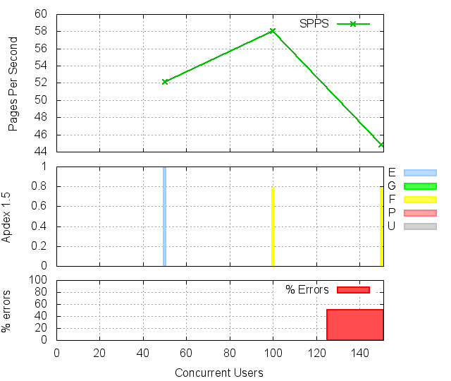 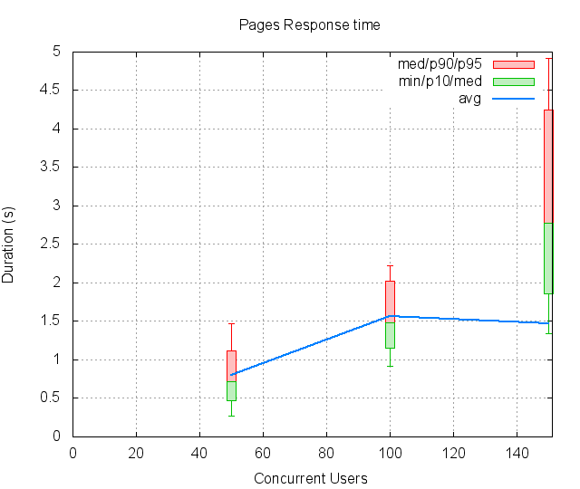
CUs Apdex* Rating SPPS maxSPPS TOTAL SUCCESS ERROR MIN AVG MAX P10 MED P90 P95 50 0.986 Excellent 52.100 90.000 3126 3126 0.00% 0.274 0.796 4.136 0.468 0.712 1.121 1.475 100 0.786 FAIR 58.067 83.000 3484 3484 0.00% 0.914 1.561 3.360 1.151 1.482 2.028 2.229 150 0.790 FAIR 44.817 80.000 5430 2689 50.48% 1.344 1.474 6.478 1.853 2.776 4.243 4.916 * Apdex 1.5
5 Request stats
The number of Requests Per Second (RPS) successful or not over Concurrent Users (CUs).
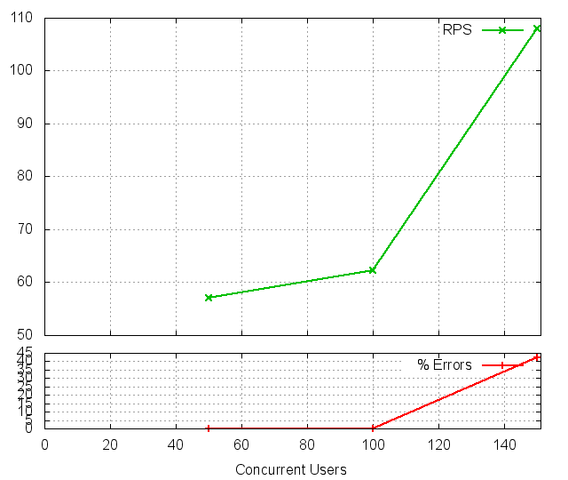 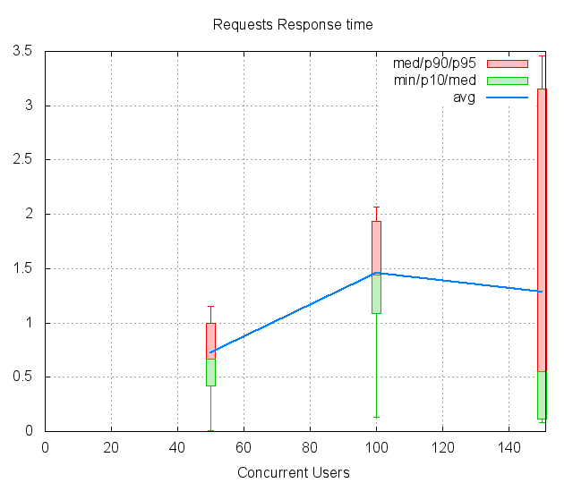
CUs Apdex* Rating* RPS maxRPS TOTAL SUCCESS ERROR MIN AVG MAX P10 MED P90 P95 50 0.986 Excellent 56.983 90.000 3419 3419 0.00% 0.012 0.727 4.136 0.423 0.664 0.995 1.154 100 0.787 FAIR 62.333 83.000 3740 3740 0.00% 0.131 1.455 2.615 1.084 1.437 1.938 2.064 150 0.791 FAIR 108.050 232.000 6483 3742 42.28% 0.085 1.289 4.868 0.116 0.549 3.156 3.462 * Apdex 1.5
6 Slowest requests
The 5 slowest average response time during the best cycle with 50 CUs:
- In page 004, Apdex rating: FAIR, avg response time: 1.61s, post: //users Create New User
- In page 004, Apdex rating: Good, avg response time: 1.07s, get: /profiles/13706 ``
- In page 003, Apdex rating: Excellent, avg response time: 0.90s, get: //users/sign_up View the user signup page
- In page 013, Apdex rating: Excellent, avg response time: 0.90s, get: /parties ``
- In page 012, Apdex rating: Excellent, avg response time: 0.87s, get: /parties ``
7 Page detail stats
7.1 PAGE 001: View the upcoming page
Req: 001, get, url //upcoming
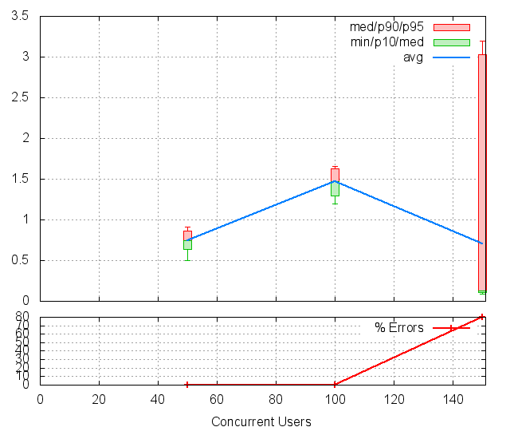
CUs Apdex* Rating TOTAL SUCCESS ERROR MIN AVG MAX P10 MED P90 P95 50 1.000 Excellent 150 150 0.00% 0.495 0.745 1.088 0.639 0.745 0.862 0.908 100 0.794 FAIR 124 124 0.00% 1.197 1.467 1.740 1.298 1.472 1.627 1.659 150 0.900 Good 2694 541 79.92% 0.088 0.705 3.962 0.112 0.130 3.033 3.191 * Apdex 1.5
Req: 002, link, url /bootstrap/3.2.0/css/bootstrap.min.css
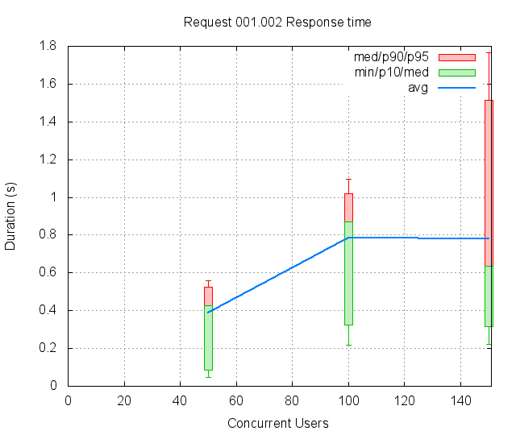
CUs Apdex* Rating TOTAL SUCCESS ERROR MIN AVG MAX P10 MED P90 P95 50 1.000 Excellent 148 148 0.00% 0.046 0.388 0.694 0.087 0.427 0.523 0.558 100 1.000 Excellent 127 127 0.00% 0.217 0.783 1.213 0.324 0.868 1.021 1.096 150 0.948 Excellent 528 528 0.00% 0.221 0.781 2.032 0.314 0.634 1.516 1.768 * Apdex 1.5
Req: 003, link, url /assets/application-61c7d55e81567830684b7378699345b0.css
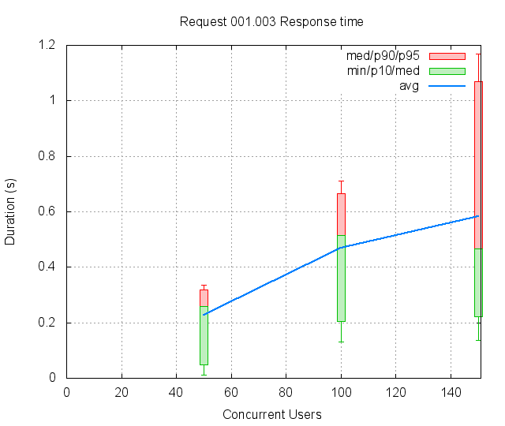
CUs Apdex* Rating TOTAL SUCCESS ERROR MIN AVG MAX P10 MED P90 P95 50 1.000 Excellent 145 145 0.00% 0.012 0.228 0.417 0.049 0.258 0.319 0.336 100 1.000 Excellent 129 129 0.00% 0.131 0.469 0.791 0.203 0.515 0.666 0.710 150 1.000 Excellent 525 525 0.00% 0.137 0.583 1.464 0.223 0.466 1.068 1.170 * Apdex 1.5
7.2 PAGE 002: View the index page
Req: 001, get, url //index
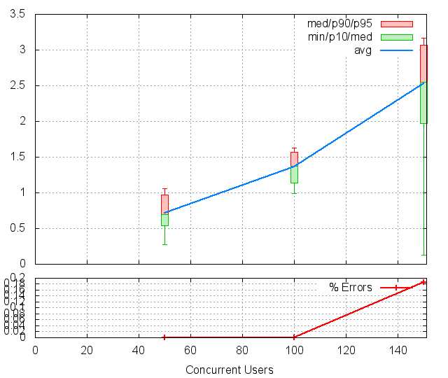
CUs Apdex* Rating TOTAL SUCCESS ERROR MIN AVG MAX P10 MED P90 P95 50 1.000 Excellent 151 151 0.00% 0.275 0.711 1.140 0.540 0.696 0.972 1.057 100 0.878 Good 148 148 0.00% 0.988 1.359 1.823 1.133 1.371 1.570 1.627 150 0.502 POOR 535 534 0.19% 0.128 2.533 3.453 1.967 2.554 3.071 3.171 * Apdex 1.5
7.3 PAGE 003: View the user signup page
Req: 001, get, url //users/sign_up
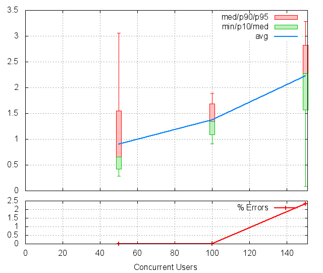
CUs Apdex* Rating TOTAL SUCCESS ERROR MIN AVG MAX P10 MED P90 P95 50 0.944 Excellent 151 151 0.00% 0.289 0.900 3.529 0.426 0.661 1.545 3.057 100 0.858 Good 166 166 0.00% 0.914 1.375 2.004 1.084 1.341 1.690 1.897 150 0.532 POOR 556 543 2.34% 0.090 2.225 4.024 1.572 2.275 2.822 3.282 * Apdex 1.5
7.4 PAGE 004: Create New User
Req: 001, post, url //users
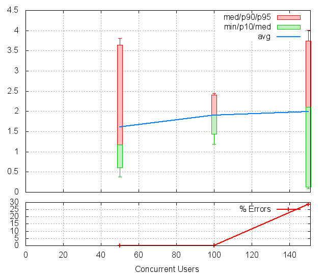
CUs Apdex* Rating TOTAL SUCCESS ERROR MIN AVG MAX P10 MED P90 P95 50 0.820 FAIR 150 150 0.00% 0.378 1.611 4.136 0.604 1.175 3.638 3.812 100 0.601 POOR 183 183 0.00% 1.187 1.904 2.615 1.435 1.921 2.406 2.449 150 0.643 POOR 555 396 28.65% 0.089 1.986 4.868 0.121 2.110 3.743 4.007 * Apdex 1.5
Req: 002, get, url /profiles/13706
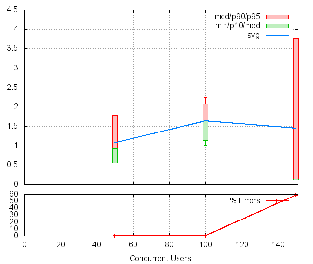
CUs Apdex* Rating TOTAL SUCCESS ERROR MIN AVG MAX P10 MED P90 P95 50 0.920 Good 150 150 0.00% 0.274 1.072 3.661 0.549 0.935 1.780 2.522 100 0.690 POOR 195 195 0.00% 1.004 1.637 2.350 1.132 1.662 2.082 2.249 150 0.793 FAIR 405 168 58.52% 0.086 1.450 4.488 0.110 0.142 3.775 4.064 * Apdex 1.5
7.5 PAGE 005: view party page
Req: 001, get, url //new
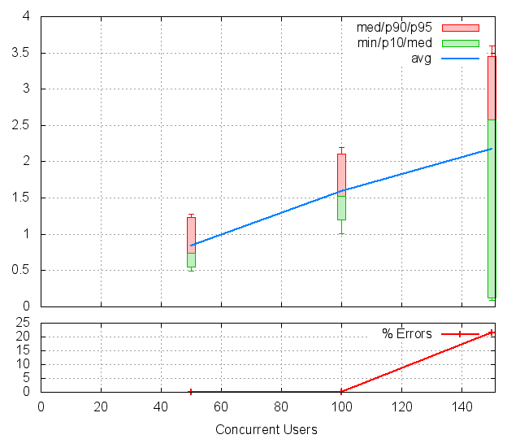
CUs Apdex* Rating TOTAL SUCCESS ERROR MIN AVG MAX P10 MED P90 P95 50 0.990 Excellent 150 150 0.00% 0.490 0.841 1.790 0.552 0.743 1.236 1.273 100 0.735 FAIR 200 200 0.00% 1.007 1.595 2.409 1.196 1.521 2.109 2.196 150 0.608 POOR 172 135 21.51% 0.095 2.179 3.783 0.126 2.572 3.454 3.593 * Apdex 1.5
7.6 PAGE 006: Create New party
Req: 001, post, url //parties
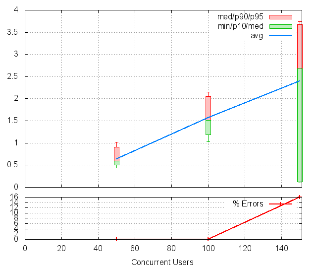
CUs Apdex* Rating TOTAL SUCCESS ERROR MIN AVG MAX P10 MED P90 P95 50 1.000 Excellent 150 150 0.00% 0.432 0.641 1.203 0.504 0.598 0.905 1.018 100 0.738 FAIR 200 200 0.00% 1.026 1.563 2.306 1.190 1.508 2.050 2.154 150 0.580 POOR 144 121 15.97% 0.099 2.396 4.219 0.124 2.681 3.670 3.737 * Apdex 1.5
Req: 002, get, url /parties/12428
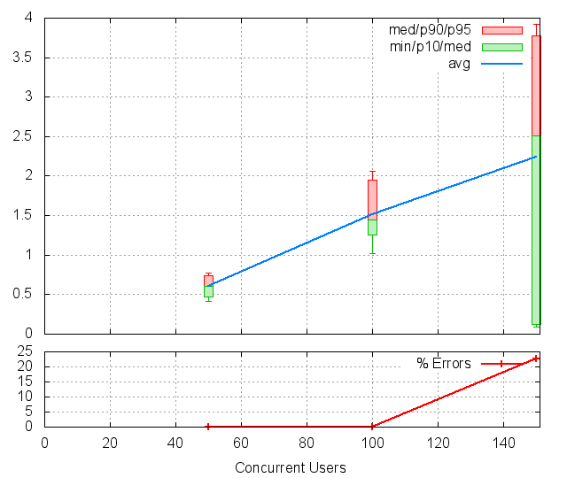
CUs Apdex* Rating TOTAL SUCCESS ERROR MIN AVG MAX P10 MED P90 P95 50 1.000 Excellent 150 150 0.00% 0.413 0.601 0.937 0.470 0.603 0.738 0.768 100 0.792 FAIR 200 200 0.00% 1.023 1.517 2.312 1.256 1.443 1.954 2.060 150 0.613 POOR 120 93 22.50% 0.085 2.236 4.185 0.127 2.506 3.779 3.926 * Apdex 1.5
7.7 PAGE 007: Inviting user
Req: 001, post, url //createasinvite
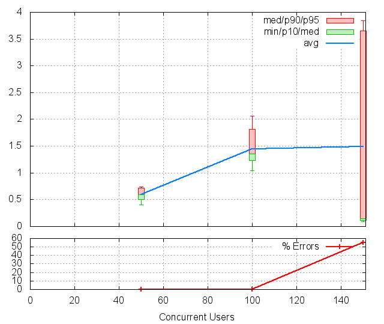
CUs Apdex* Rating TOTAL SUCCESS ERROR MIN AVG MAX P10 MED P90 P95 50 1.000 Excellent 150 150 0.00% 0.401 0.599 0.814 0.507 0.594 0.714 0.742 100 0.858 Good 200 200 0.00% 1.043 1.451 2.347 1.232 1.359 1.816 2.064 150 0.775 FAIR 91 41 54.95% 0.093 1.494 4.478 0.109 0.145 3.654 3.847 * Apdex 1.5
Req: 002, get, url /parties/12428
CUs Apdex* Rating TOTAL SUCCESS ERROR MIN AVG MAX P10 MED P90 P95 50 1.000 Excellent 150 150 0.00% 0.320 0.512 0.718 0.450 0.498 0.613 0.659 100 0.925 Good 200 200 0.00% 1.034 1.284 2.057 1.093 1.219 1.625 1.750 150 0.622 POOR 41 31 24.39% 0.109 2.148 4.004 0.123 2.469 3.474 3.701 * Apdex 1.5
7.8 PAGE 008: Inviting user
Req: 001, post, url //createasinvite
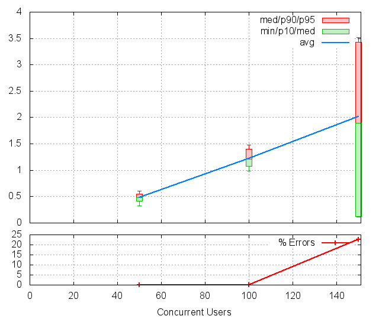
CUs Apdex* Rating TOTAL SUCCESS ERROR MIN AVG MAX P10 MED P90 P95 50 1.000 Excellent 150 150 0.00% 0.330 0.477 0.672 0.410 0.478 0.554 0.604 100 0.978 Excellent 200 200 0.00% 0.985 1.225 1.642 1.072 1.209 1.397 1.474 150 0.645 POOR 31 24 22.58% 0.111 2.019 3.550 0.126 1.892 3.434 3.522 * Apdex 1.5
Req: 002, get, url /parties/12427
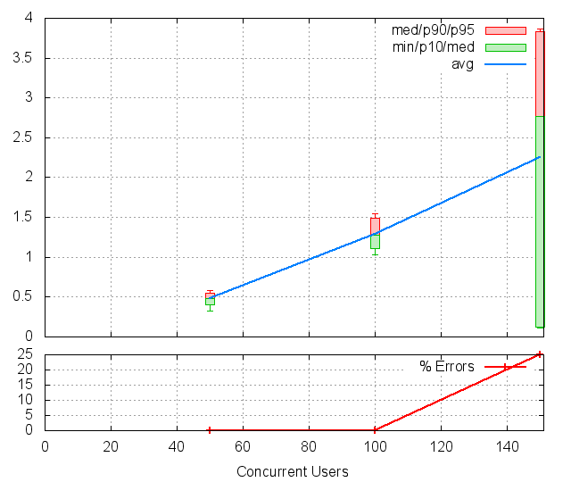
CUs Apdex* Rating TOTAL SUCCESS ERROR MIN AVG MAX P10 MED P90 P95 50 1.000 Excellent 150 150 0.00% 0.322 0.484 0.813 0.400 0.486 0.544 0.581 100 0.958 Excellent 200 200 0.00% 1.031 1.286 1.712 1.110 1.277 1.494 1.541 150 0.625 POOR 24 18 25.00% 0.108 2.251 3.882 0.122 2.768 3.835 3.867 * Apdex 1.5
7.9 PAGE 009: Inviting user
Req: 001, post, url //createasinvite
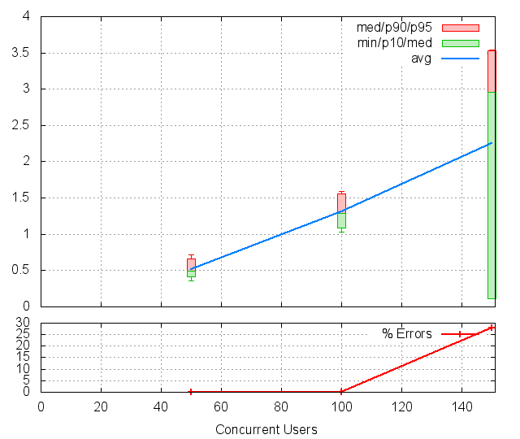
CUs Apdex* Rating TOTAL SUCCESS ERROR MIN AVG MAX P10 MED P90 P95 50 1.000 Excellent 150 150 0.00% 0.361 0.518 0.977 0.410 0.497 0.657 0.714 100 0.903 Good 196 196 0.00% 1.033 1.312 1.725 1.092 1.286 1.560 1.588 150 0.639 POOR 18 13 27.78% 0.116 2.247 3.542 0.116 2.960 3.529 3.542 * Apdex 1.5
Req: 002, get, url /parties/12427
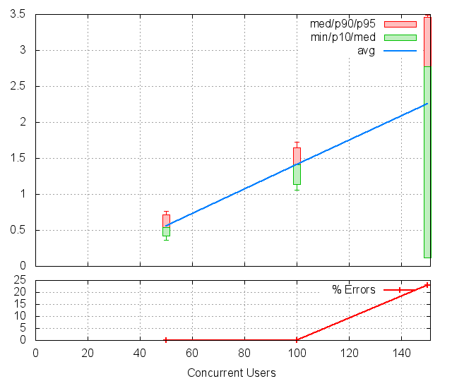
CUs Apdex* Rating TOTAL SUCCESS ERROR MIN AVG MAX P10 MED P90 P95 50 1.000 Excellent 150 150 0.00% 0.358 0.556 1.020 0.424 0.542 0.719 0.767 100 0.824 FAIR 185 185 0.00% 1.058 1.409 1.832 1.141 1.410 1.651 1.721 150 0.654 POOR 13 10 23.08% 0.113 2.259 3.489 0.120 2.773 3.462 3.489 * Apdex 1.5
7.10 PAGE 010: View index page
Req: 001, get, url //index
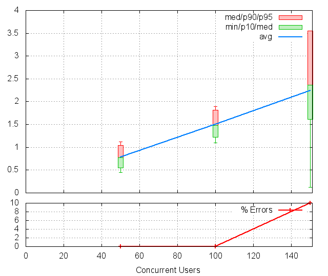
CUs Apdex* Rating TOTAL SUCCESS ERROR MIN AVG MAX P10 MED P90 P95 50 1.000 Excellent 150 150 0.00% 0.448 0.781 1.273 0.551 0.776 1.047 1.121 100 0.762 FAIR 168 168 0.00% 1.093 1.500 2.144 1.221 1.476 1.814 1.894 150 0.550 POOR 10 9 10.00% 0.125 2.236 3.555 1.615 2.362 3.555 3.555 * Apdex 1.5
7.11 PAGE 011: Asking to join
Req: 001, post, url //join_members
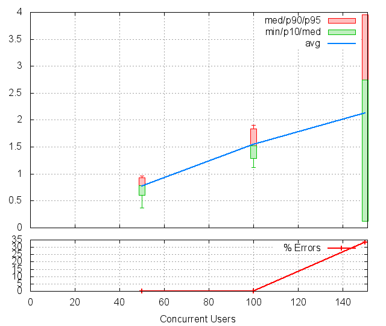
CUs Apdex* Rating TOTAL SUCCESS ERROR MIN AVG MAX P10 MED P90 P95 50 1.000 Excellent 150 150 0.00% 0.366 0.775 1.005 0.609 0.789 0.926 0.963 100 0.723 FAIR 150 150 0.00% 1.118 1.544 2.031 1.289 1.529 1.842 1.900 150 0.667 POOR 9 6 33.33% 0.120 2.130 3.953 0.120 2.746 3.953 3.953 * Apdex 1.5
Req: 002, get, url /parties
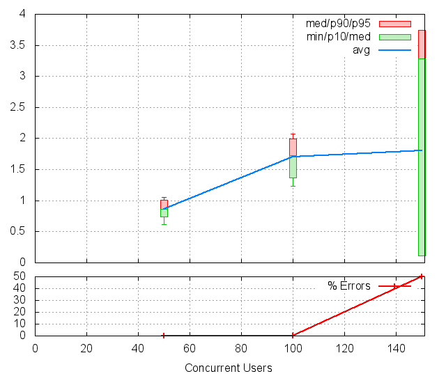
CUs Apdex* Rating TOTAL SUCCESS ERROR MIN AVG MAX P10 MED P90 P95 50 1.000 Excellent 150 150 0.00% 0.612 0.861 1.154 0.742 0.858 1.009 1.048 100 0.604 POOR 135 135 0.00% 1.236 1.704 2.228 1.372 1.726 1.993 2.068 150 0.750 FAIR 6 3 50.00% 0.112 1.800 3.740 0.112 3.280 3.740 3.740 * Apdex 1.5
7.12 PAGE 012: Asking to join
Req: 001, post, url //join_members
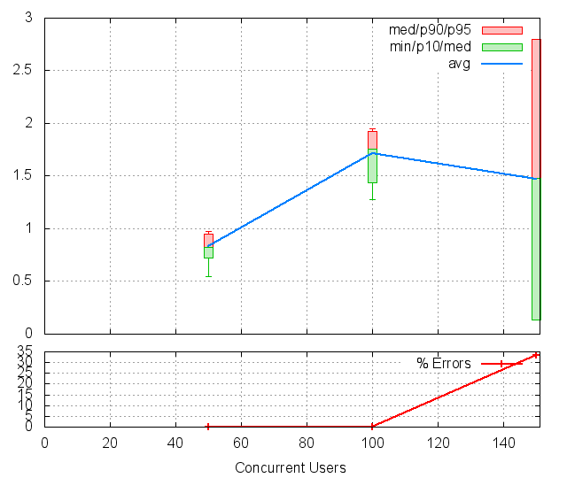
CUs Apdex* Rating TOTAL SUCCESS ERROR MIN AVG MAX P10 MED P90 P95 50 1.000 Excellent 150 150 0.00% 0.547 0.830 1.047 0.727 0.824 0.947 0.971 100 0.574 POOR 121 121 0.00% 1.278 1.714 2.061 1.436 1.753 1.922 1.949 150 0.833 FAIR 3 2 33.33% 0.136 1.473 2.800 0.136 1.483 2.800 2.800 * Apdex 1.5
Req: 002, get, url /parties
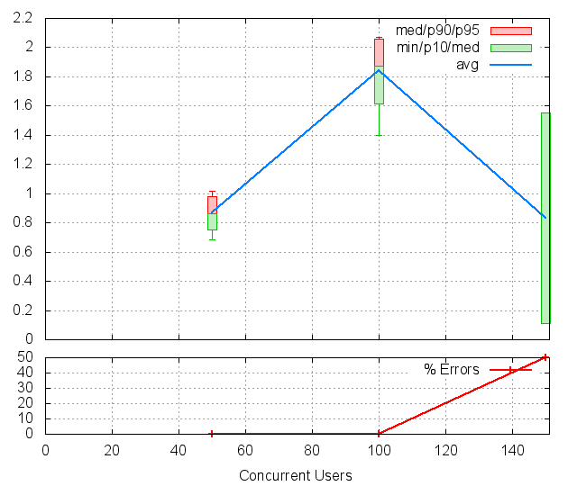
CUs Apdex* Rating TOTAL SUCCESS ERROR MIN AVG MAX P10 MED P90 P95 50 1.000 Excellent 149 149 0.00% 0.683 0.868 1.061 0.751 0.866 0.980 1.014 100 0.509 POOR 110 110 0.00% 1.400 1.845 2.210 1.615 1.875 2.059 2.072 150 0.750 FAIR 2 1 50.00% 0.112 0.832 1.552 0.112 1.552 1.552 1.552 * Apdex 1.5
7.13 PAGE 013: Asking to join
Req: 001, post, url //join_members
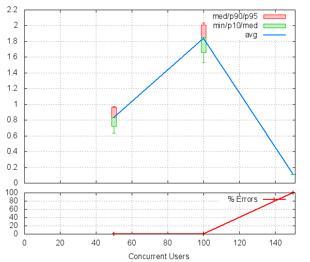
CUs Apdex* Rating TOTAL SUCCESS ERROR MIN AVG MAX P10 MED P90 P95 50 1.000 Excellent 142 142 0.00% 0.633 0.834 1.035 0.722 0.832 0.958 0.972 100 0.500 POOR 103 103 0.00% 1.534 1.837 2.208 1.655 1.847 2.006 2.032 150 1.000 Excellent 1 0 100.00% 0.111 0.111 0.111 0.111 0.111 0.111 0.111 * Apdex 1.5
Req: 002, get, url /parties
_files/request_013.002.png)
CUs Apdex* Rating TOTAL SUCCESS ERROR MIN AVG MAX P10 MED P90 P95 50 1.000 Excellent 133 133 0.00% 0.694 0.899 1.075 0.783 0.891 1.017 1.050 100 0.500 POOR 100 100 0.00% 1.586 1.873 2.271 1.697 1.878 2.046 2.127 * Apdex 1.5
8 Failures and Errors
8.1 Failures
2741 time(s), code: 503:
No traceback.
9 Definitions
CUs: Concurrent users or number of concurrent threads executing tests.
Request: a single GET/POST/redirect/xmlrpc request.
Page: a request with redirects and resource links (image, css, js) for an html page.
STPS: Successful tests per second.
SPPS: Successful pages per second.
RPS: Requests per second, successful or not.
maxSPPS: Maximum SPPS during the cycle.
maxRPS: Maximum RPS during the cycle.
MIN: Minimum response time for a page or request.
AVG: Average response time for a page or request.
MAX: Maximmum response time for a page or request.
P10: 10th percentile, response time where 10 percent of pages or requests are delivered.
MED: Median or 50th percentile, response time where half of pages or requests are delivered.
P90: 90th percentile, response time where 90 percent of pages or requests are delivered.
P95: 95th percentile, response time where 95 percent of pages or requests are delivered.
Apdex T: Application Performance Index, this is a numerical measure of user satisfaction, it is based on three zones of application responsiveness:
Satisfied: The user is fully productive. This represents the time value (T seconds) below which users are not impeded by application response time.
Tolerating: The user notices performance lagging within responses greater than T, but continues the process.
Frustrated: Performance with a response time greater than 4*T seconds is unacceptable, and users may abandon the process.
By default T is set to 1.5s this means that response time between 0 and 1.5s the user is fully productive, between 1.5 and 6s the responsivness is tolerating and above 6s the user is frustrated.
The Apdex score converts many measurements into one number on a uniform scale of 0-to-1 (0 = no users satisfied, 1 = all users satisfied).
Visit http://www.apdex.org/ for more information.
Rating: To ease interpretation the Apdex score is also represented as a rating:
- U for UNACCEPTABLE represented in gray for a score between 0 and 0.5
- P for POOR represented in red for a score between 0.5 and 0.7
- F for FAIR represented in yellow for a score between 0.7 and 0.85
- G for Good represented in green for a score between 0.85 and 0.94
- E for Excellent represented in blue for a score between 0.94 and 1.
Report generated with FunkLoad 1.16.1, more information available on the FunkLoad site.